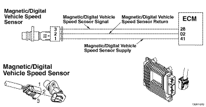
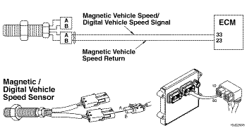
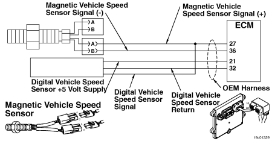

Código de Falha 241
|
| CÓDIGO | RAZÃO | EFEITO |
| Código de Falha: 241 PID: P084 SPN: 84 FMI: 2/2 LÂMPADA: Âmbar SRT: |
Velocidade do Veículo Baseada na Roda - Dados Inválidos, Intermitentes ou Incorretos. O ECM perdeu o sinal de velocidade do veículo. |
A rotação do motor será limitada ao valor do parâmetro Rotação Máxima do Motor Sem Sensor da Velocidade do Veículo (VSS). O Piloto Automático, a Proteção em Marcha Reduzida e o Governador de Velocidade de Estrada não funcionarão. |
|
 ISF2.8 CM2220 E/ISF2.8 CM2220 AN/ISF3.8 CM2220 AN - Circuito do Sensor de Velocidade do Veículo
|
|
 ISB4.5, ISB6.7, ISD4.5, e ISD6.7 CM2150 SN/ISL8.9 CM2150 SN/ISZ13 CM2150 - Circuito do Sensor de Velocidade do Veículo
|
|
 ISM11 CM876 SN - Circuito do Sensor de Velocidade do Veículo
|
O sensor da velocidade do veículo detecta a rotação da engrenagem do eixo traseiro na transmissão do veículo. Esse sinal de rotação é então transmitido ao módulo eletrônico de controle (ECM) e convertido em uma velocidade do veículo.
O sensor da velocidade do veículo está localizado na parte traseira da transmissão do veículo. Consulte o manual de serviços do OEM para obter a localização.
Este diagnóstico é executado continuamente enquanto o veículo está em movimento.
O ECM detecta uma diminuição da velocidade do veículo quando outras condições de operação do motor indicam que o veículo pode estar em movimento.
Existem vários tipos de sensores de velocidade do veículo. Os vários tipos incluem a tomada magnética, o datalink e o tacógrafo. Entre em contato com o OEM para saber o tipo específico instalado no veículo.
Esta falha é ativada quando o ECM perde o sinal de velocidade do veículo e outras condições do motor indicam que o veículo está em movimento. Esta falha também pode tornar-se ativa se houver uma série de movimentações da embreagem, do freio de serviço ou do acelerador sem a movimentação do veículo. A falha torna-se inativa quando o ECM recebe um sinal de velocidade do veículo maior que zero.
Como o sensor da velocidade do veículo é um componente instalado pelo OEM, este procedimento de diagnóstico de falha não identificará todas as falhas do circuito porque os componentes não se encontram sob o controle da Cummins. Os valores de resistência do sensor, os sensores de velocidade do datalink e os tacógrafos não são totalmente abrangidos neste procedimento.
Consulte o diagnóstico do Código de Falha 241.